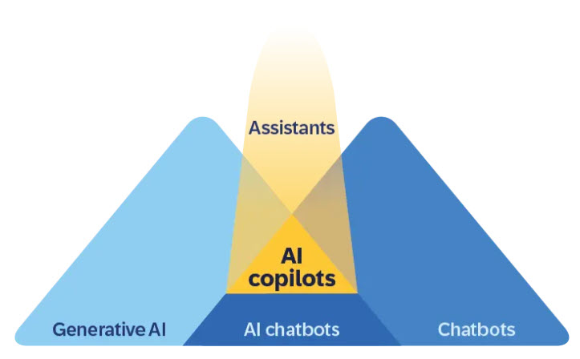
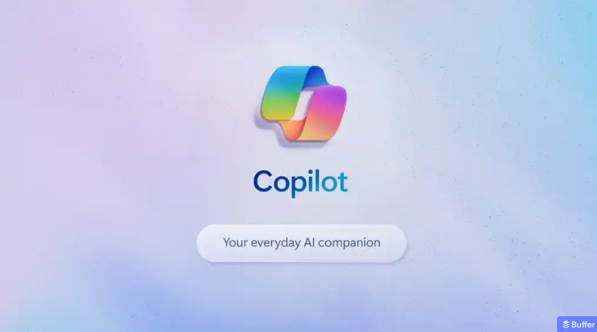

Generativ AI i förvaltningen
Att komma igång med AI-verktyg i kommunal verksamhet
Sida 1 av 5
Att komma igång med AI-verktyg i kommunal verksamhet


Bildkälla: SAP (2025)
Nu är du redo! Testa dina kunskaper om generativ AI i offentlig förvaltning! 🤖
Filstruktur: Detta quiz är byggt med separation of concerns-principen, där HTML, CSS och JavaScript är uppdelade i separata filer:
Att dela upp kod i separata filer ger flera fördelar:
Skapad: 2025-12-19
Baserad på: Blogginlägg om generativ AI i kommunal förvaltning, Digg och IMY:s riktlinjer, samt forskning om prompt engineering.
Fokus: Praktisk vägledning för tjänstemän som vill komma igång med generativ AI.
Quiz: Att komma igång med Generativ AI i kommunal förvaltning
Frågor och fördjupade förklaringar baserade på (i Harvard-format):
Detta quiz är skapat för att hjälpa tjänstemän i kommunal förvaltning att komma igång med generativ AI.
🤖 Fokus: Promptskrivning, dialogprincipen, nationella riktlinjer och rättssäker AI-användning.
Den fullständiga presentationen finns här: "Att komma igång med Generativ AI".
Digg:s AI-riktlinjer: www.digg.se
Prompt Engineering Guide: www.promptingguide.ai
Läs mer på bloggen: Controller utan gränser